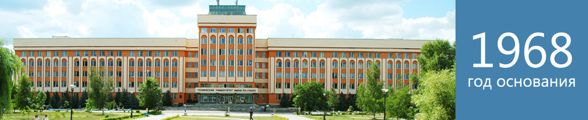

 Идея создания в Гомеле политехнического вуза принадлежит бывшему директору завода «Гомсельмаш» Ивану Прокофьевичу
Котенку. Именно его инициатива, поддержанная местными органами власти и Министерством высшего и среднего специального
образования, явилась тем импульсом, который привел к открытию общетехнического факультета Белорусского ордена
Трудового Красного Знамени политехнического института (БПИ) при заводе «Гомсельмаш».
В университете работают и получают образовательные услуги около 10000 человек, функционируют 7 факультетов:
энергетический, машиностроительный, механико-технологический, факультет автоматизированных и информационных систем,
гуманитарно-экономический и заочный факультет, факультет довузовской подготовки. В 2011 году на базе факультета
повышения квалификации и переподготовки кадров создан институт повышения квалификации и переподготовки кадров.
Библиотека университета насчитывает более 535 тыс. экз. литературы, осуществляется подписка на научные журналы.
Электронный каталог библиотеки, электронная библиотека и другие базы данных доступны пользователям как из локальной
вычислительной сети университета так из через Интернет. Библиотека обеспечивает также доступ посетителям к Интернет-ресурсам
и полнотекстовым базам данных учебных и научных изданий.
Университет участвует в выполнении республиканских и межвузовских научно-технических программ, активно сотрудничает
в области образования и науки с Центром теоретической зики им. Абдуса Салама (г. Триест, Италия), Триестским
и Падуанским университетами, Объединенным институтом ядерных исследований (г. Дубна), Институтом низких температур
и структурных исследований Польской академии наук (г. Вроцлав), циональным техническим университетом Украины
«Киевский политехнический институт» и рядом других зарубежных учреждений и учебных заведений.
Личная страница
Грищенко Дениса Петровича